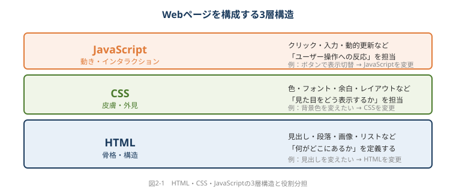
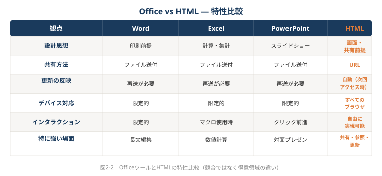
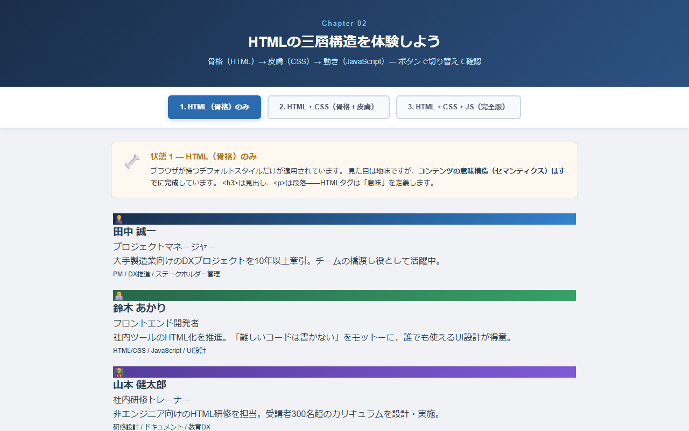

第2章 HTMLは"ホームページを作る技術"ではない
📂 本章のサンプルファイル:ch02_structure.html
ブラウザで開くと、本章で解説するHTMLコンテンツを実際に操作できます。
本書サポートサイトからダウンロードしてください。
2-1 HTMLの「本当の役割」を理解する
あなたが持っている「HTMLはエンジニアのもの」という印象は、いつ、何によって作られましたか？
少しだけ記憶を遡ってみてください。「HTML」という言葉を初めて聞いたのはいつでしょうか。おそらく2000年代前後の「ホームページ作成ブーム」の時期に、「自分のホームページを作るための技術」として刷り込まれた方が多いのではないかと思います。
その刷り込みが、今もHTMLへの第一印象を決めています。「ホームページを作る技術」「エンジニアが使うもの」「自分には縁遠い」——しかし、この認識は根本的に間違っています。HTMLは最初から「ホームページを作るための技術」ではありませんでした。本章では、その誤解を解くところから始めます。
2-1-1 HTMLは「文書構造を記述する言語」である
HTMLの正式名称はHyperText Markup Language（ハイパーテキスト・マークアップ・ランゲージ）といいます。名前の中に「Web」も「ホームページ」も含まれていないことに気づくでしょうか。
HTMLが最初に設計された目的は、「研究論文や学術文書を、インターネット上でつながった状態で共有する」ことでした。1989年、スイスの研究機関CERNで物理学者ティム・バーナーズ＝リーが考案したとき、それは複雑なプログラミングではなく、「文書の構造を記述するための簡単な記法」でした。
「文書の構造を記述する」とはどういうことでしょうか。
Wordで文書を作るとき、私たちは「見た目」を操作します。文字を太くする、フォントサイズを変える、色をつける——これらはすべて見た目の操作です。一方、HTMLでは「意味」を記述します。「これは見出しである」「これは本文の段落である」「これは箇条書きのリストである」「これは表のデータである」という情報を、タグ（tag：<と>で囲まれた記号）を使って表現します。
具体例で考えてみましょう。Wordで文書を作るとき、「第1節 背景」という行をフォントサイズ16pt・太字に設定するかもしれません。それは「大きくて太い文字」という見た目の情報です。HTMLでは同じ内容を<h1>第1節 背景</h1>と書きます。これは「これは第1レベルの見出しである」という意味の情報です。
ブラウザはこの意味を受け取って、「第1レベルの見出しは通常大きく太字で表示する」という自分のルールで画面に描画します。「どう見せるか」はブラウザが担い、HTMLは「何を意味するか」だけを伝える。この分担が、HTMLの本質です。
このような「意味を記述する」アプローチには、大きな利点があります。スマートフォンでは小さな画面に合わせた見せ方をする、音声読み上げソフトを使う視覚障害のある方には「見出しです」と音声で伝える、検索エンジンは「重要な見出しが書いてある」と認識してインデックスする——同じHTMLが、様々な文脈で適切に解釈されるのです。
💡 AIへの依頼例
【目的】HTML・CSS・JavaScriptの三層構造を体感するため、3つの役割を視覚的に説明するサンプルページを作りたい
【含める要素】HTMLの説明と骨格サンプル、CSSの説明と色・レイアウトを変えるボタン、JavaScriptの説明とクリックで動くカウンター
【スタイル】学習用・教育的、各レイヤーを色で区別（HTML=オレンジ、CSS=青、JavaScript=緑）
【出力形式】完全なHTMLファイルとして出力してください。HTML・CSS・JavaScriptをすべて1ファイルにまとめてください
このプロンプトをそのままClaude/ChatGPT/Geminiに貼り付けて使えます。
2-1-2 CSS・JavaScriptとの役割分担
「HTMLだけでWebページが作れるの？」という疑問を持った方もいるかもしれません。実際のWebページは、HTML・CSS・JavaScriptという3つの技術が組み合わさって動いています。
この3つの関係を「人体」に例えると、直感的に理解できます。
HTML（骨格）：構造を定義します。「見出しがあって、段落があって、画像があって、リストがある」という骨格です。何がどこにあるかを決めます。
CSS（皮膚・外見）：見た目を担当します。「見出しは青色で、フォントサイズは24px、余白は上下に20px」という外見の指定です。骨格に肉付けをして、美しく見せます。CSS（Cascading Style Sheets：カスケーディング・スタイル・シーツ）はHTMLとは別のファイルで管理することが多く、HTMLとスタイルを分離できます。
JavaScript（動き）：インタラクション（ユーザーの操作への反応）を担当します。「ボタンをクリックしたら内容が展開される」「検索ボックスに入力すると結果がリアルタイムで絞り込まれる」「グラフのデータが動的に更新される」といった動的な動作を実現します。
この3層構造を理解しておくと、後の章で生成AIにHTMLを依頼するときに役立ちます。「このボタンをクリックしたら詳細が表示されるようにして」という指示は、JavaScriptの部分を変更する依頼です。「背景を白から薄いグレーに変えて」はCSSの変更です。「見出しを2つ追加して」はHTMLの変更です。
重要なのは、この3つをすべて自分で書く必要はないという点です。生成AIはこの3つをまとめて生成してくれます。あなたが理解すべきは「どれが何の役割を担うか」という大まかな構造だけで十分です。

2-1-3 「Webサイトを作る」以外のHTMLの使われ方
HTMLは今や、「Webサイト」という枠をはるかに超えた用途で使われています。
メールマガジンのレイアウト：あなたが受け取るHTML形式のメールは、実はHTMLで作られています。画像入りで色鮮やかなメールマガジンは、HTMLとCSSの組み合わせです。
PDF代替のHTMLレポート：かつてはPDFで配布していた報告書をHTMLにすることで、検索可能・リンク機能・更新反映という利点が生まれます。
社内ポータル・ナレッジページ：チームの情報をまとめたページ、プロジェクトの進捗ページ、部署のホームページ——これらは多くの企業でHTMLを基盤にして作られています。
ダッシュボード：データを可視化してリアルタイムで表示するダッシュボードは、HTMLとJavaScriptを組み合わせて作られます。
電子書籍：Kindleなどで読む電子書籍の多くは、内部的にはHTMLで構成されています。
プレゼンテーション：ブラウザ上で動くスライド形式のプレゼンツール（Reveal.jsなど）もHTMLを基盤にしています。
この広さが、HTMLがビジネスの文脈で本当に強力な理由です。一つの技術を使いこなせれば、これだけ多様な成果物に対応できるのです。
2-2 Officeとの違いを構造的に理解する
同じ「月次報告」を、Word版とHTML版で作ったら、体験はどう変わるでしょうか？
ここからは、Word・Excel・PowerPointという慣れ親しんだOfficeツールとHTMLを比べることで、HTMLの特性をより具体的に理解していきましょう。違いを知ることが、適切な場面でHTMLを選ぶ判断力につながります。
2-2-1 Wordとの比較：文書記述の思想の違い
Wordは「WYSIWYG（What You See Is What You Get：ウィジウィグ）」という設計思想で作られています。「見たままが得られる」という意味で、画面に表示された状態がそのまま印刷結果になります。見た目の操作が直感的で、フォントを変えれば即座に画面が変わります。
一方のHTMLは「マークアップ」の設計思想です。見た目ではなく意味を書き、表示はブラウザに委ねます。
この違いは、実際の使用体験に次のような差をもたらします。
更新と共有：Wordで文書を更新したら、ファイルを再送しなければなりません。HTMLで更新したら、次にURLにアクセスした人は自動的に最新版を見ます。
デバイス適応：Wordは基本的にA4サイズ固定です。スマートフォンで読むには横スクロールするか、縮小して読むしかありません。HTMLはレスポンシブデザインで、画面サイズに合わせて最適表示されます。
検索性：Word文書の内容は、ファイルを開かないと検索できません。HTMLは社内検索システムにインデックスされ、「あの手順書どこだっけ？」という検索から直接たどり着けます。
リンク：Word内でリンクを張ることはできますが、ファイルが別の環境に移るとリンク切れが起きがちです。HTMLのリンクは堅牢で、外部Webページへの参照も自然につながります。
同じ「月次報告書」を作るとして、Wordで作った場合はA4縦のファイルを全員にメールで送ります。HTMLで作った場合はURLを一本展開するだけで、PCでもスマートフォンでも問わず誰でも最新版にアクセスできます。どちらが受け取る側にとって使いやすいか、想像してみてください。
💡 AIへの依頼例
【目的】OfficeとHTMLの違いを社内研修で説明するための比較表ページを作りたい
【含める要素】Word・Excel・PowerPoint・HTMLを「共有方法」「更新の反映」「デバイス対応」「特に向いている用途」の4軸で比較した表、各ツールの特徴の簡単な説明文
【スタイル】研修資料向け、見やすい表形式、HTMLの列だけ背景色を薄い緑で強調
【出力形式】完全なHTMLファイルとして出力してください
このプロンプトをそのままClaude/ChatGPT/Geminiに貼り付けて使えます。
2-2-2 ExcelとHTMLの比較：計算と表現の分離
Excelは非常に強力なツールです。数値計算・集計・グラフ作成・データ管理——これらをひとつのソフトウェアでこなせます。多くの職場でExcelは欠かせない存在であり、本書はExcelを否定するつもりはありません。
しかし、Excelには一つの設計上の特徴があります。「データ」と「表示」が混在しているという点です。
Excelのセルには、数値データと表示スタイル（色・罫線・フォント）が同じ場所に共存しています。これは直感的で便利な半面、次のような問題を生みます。
- Excelファイルを開かないと中身が見えない（スマートフォンでの確認が難しい）
- データを更新すると表示も変わる（意図しない見た目の崩れが起きることがある）
- ファイルを配布すると、受け取った人がデータを編集できてしまう
- 集計結果を見せたいだけなのに、計算式や元データも一緒に届いてしまう
HTMLでは、データと表示を分離できます。例えば、Excelで計算した集計結果をHTMLに変換してURLで共有すれば、受け取った人はきれいな表として見るだけで、元のデータや計算式にはアクセスできません。ブラウザで動く検索機能やソート機能をつければ、Excelを開かなくても必要な情報を素早く見つけられます。
具体例を挙げましょう。500行の顧客リストをExcelファイルで共有するより、ブラウザで開けるHTMLの一覧表として公開する方が、受け取った人にとってはるかに使いやすい場合があります。検索バーに会社名を入力すれば瞬時に絞り込める、担当者名でソートできる——これらの機能は、HTMLとJavaScriptで実現できます（そしてその実装は、生成AIに依頼できます）。
Excelの計算力とHTMLの表示力・共有力を組み合わせる「分業」の発想が、実践的なアプローチです。
💡 AIへの依頼例
【目的】Excelで管理している顧客リストを、ブラウザ上で誰でも検索・閲覧できるHTMLページに変換したい
【含める要素】会社名、担当者名、業種、担当営業、最終接触日、ステータス（見込み・商談中・成約・失注）の一覧表、会社名と担当者名で絞り込める検索バー、ステータスでフィルタリングできるボタン
【スタイル】ビジネス向け、白基調でシンプル、ステータスはそれぞれ色付きのラベルで表示
【出力形式】完全なHTMLファイルとして出力してください。サンプルデータを5件含めてください
このプロンプトをそのままClaude/ChatGPT/Geminiに貼り付けて使えます。
2-2-3 PowerPointとHTMLの比較：スライドとページ
PowerPointは「スライドショー」という形式を前提に設計されています。1枚1枚をめくっていく体験、プレゼンターが話しながら操作する形式、1枚に詰め込める情報量の制約——これらはすべて「スライドショー」という表現形式から来ています。
HTMLの「ページ」は、まったく別の体験を提供します。
スクロール型の情報提供：HTMLでは縦にスクロールすることで情報が展開します。読み手は自分のペースで読み進められ、気になる部分に戻るのも自由です。40枚のスライドを1ページにまとめることで、全体像を一気に把握できる読み物になります。
非線形な情報探索：目次・ページ内リンク・検索機能を使って、読みたい部分に直接ジャンプできます。PowerPointのように「最初から最後まで順に見る」という制約がありません。
補足情報の自然な統合：HTMLでは「詳細はこちら」という外部リンク、クリックで展開するアコーディオン（折りたたみ）形式の補足説明、動画の埋め込み——これらが自然に実現できます。PowerPointでは別資料として分けるか、スライドを増やすかしか選択肢がありません。
事後の共有と参照：プレゼン後にスライドを共有する場合、PowerPointはまたファイルを送ります。HTMLのプレゼンならURLをそのまま共有でき、後で見返したいときもそのURLにアクセスするだけです。
もちろん、リアルタイムのプレゼンテーションという用途では依然としてPowerPointが便利です。しかし「作って終わり」ではなく「作って読んでもらう・参照してもらう」という成果物は、HTMLが大きな優位性を持ちます。
2-3 HTMLで何ができるか——ビジネスシーンの一覧
もしHTMLが「当たり前のビジネスツール」だったら、あなたの仕事の成果物はどう変わっていたでしょうか？
HTMLで作れるものは大きく3つのパターンに分けられます。それぞれのパターンを具体的なビジネスシーンとともに見ていきましょう。
2-3-1 静的コンテンツとしてのHTML（報告書・資料）
「静的（せいてき）」とは、ユーザーが操作しても変化しない、読むだけのコンテンツを指します。印刷物に近い感覚ですが、URLで共有できて環境を選ばないという点で、PDFやWordよりも優れた特性を持ちます。
活用シーン：
- プロジェクト状況報告書：週次・月次の報告書をHTMLにすることで、社内全員がURLでアクセスできる状態を維持できます。更新するたびに全員に再送する手間がなくなります。
- 社内FAQ・ナレッジページ：よくある質問や業務ノウハウを整理したHTMLページは、新人研修の資料にも、ベテランの参照ページにもなります。「あの手順、どこに書いてあったっけ？」という時間を大幅に削減します。
- 社内制度・規則の案内ページ：就業規則・申請フロー・経費精算の手順——これらをHTMLで整理すると、変更があったときに一箇所を更新するだけで全員に最新情報が届きます。
- イベント・研修の案内ページ：日時・場所・プログラム・申し込み方法を視覚的に整理したHTMLページは、Wordの案内文よりも伝わりやすく、スマートフォンでも快適に読めます。
2-3-2 インタラクティブコンテンツとしてのHTML（フォーム・フィルター）
「インタラクティブ（interactive）」とは、ユーザーが操作することで表示や内容が変化するコンテンツです。クリック・入力・スクロールなどの操作に応答できる「動く文書」とも言えます。
活用シーン：
- 絞り込み・フィルター機能付き一覧：100件のプロジェクト一覧で、「進行中」のものだけを表示したり、担当者名で絞り込んだりできます。ExcelのExcelフィルター機能に近いことが、ブラウザ上でURLを共有した状態で実現できます。
- アコーディオン式のFAQページ：質問一覧が表示されていて、クリックすると回答が展開される仕組みです。視覚的なノイズを減らしながら、必要な情報にすぐアクセスできます。
- タブ切り替えコンテンツ：同じページの中に「概要」「詳細」「連絡先」などのタブを設けて、クリックで切り替えられるようにします。提案書の中で「経営幹部向け要約」と「実務担当者向け詳細」を同じページに共存させるような使い方もできます。
- 申し込みフォーム・アンケート：HTMLのフォームは、研修の受講申し込み・社内アンケート・問い合わせ窓口として活用できます。
2-3-3 データビジュアライゼーションとしてのHTML（グラフ・図解）
「データビジュアライゼーション（data visualization：データを視覚的に表現する手法）」は、HTMLとJavaScriptの組み合わせで最も強力に発揮される領域です。
活用シーン：
- KPIダッシュボード：売上・案件数・進捗率などの重要指標（KPI：Key Performance Indicator）を、カード形式・棒グラフ・折れ線グラフで表示するページです。Excelのグラフを毎月貼り直す代わりに、データを更新するだけで表示が変わるダッシュボードが実現できます。
- プロジェクト進捗の視覚化：ガントチャートに似た進捗表示や、フェーズごとの完了率を色で示した表は、状況を一目で把握するのに役立ちます。
- 業務フロー・プロセス図：承認フロー・業務手順・システム構成図などを、クリックで詳細が表示されるインタラクティブな図解として作れます。
- 地図連携：訪問先の地図・店舗分布・担当地域の視覚化なども、HTML上で実現できます。
これらのビジュアライゼーションは、かつては専門のエンジニアに依頼するしかありませんでした。今日では、生成AIに「このデータで棒グラフを作ってください」と依頼するだけで、実用的なHTMLが生成されます。
💡 AIへの依頼例
【目的】チームのKPI達成状況を一目で確認できるダッシュボードページを作りたい
【含める要素】月次売上（棒グラフ）、目標達成率（ドーナツグラフ）、案件進捗（未着手・進行中・完了の件数カード）、チームメンバー別の担当案件数（横棒グラフ）
【スタイル】ダッシュボード風、ダークグレー背景にカード形式、グラフは明るいアクセントカラー
【出力形式】完全なHTMLファイルとして出力してください。グラフはChart.jsを使ってください。サンプルデータを含めてください
このプロンプトをそのままClaude/ChatGPT/Geminiに貼り付けて使えます。
2-4 「HTMLで作る」とはどういう体験か
「難しそう」を「意外と簡単そう」に変えるために、実際の体験を想像してみましょう
HTMLの話を聞いて「便利そうだな」と感じた方も、「でも実際に作るのは難しいんじゃないか」と思われているかもしれません。この節では、HTMLを体験する最小の手順を紹介します。生成AIを使わない素の方法も含め、「実際どうやるか」のイメージを持ってもらいたいと思います。
2-4-1 テキストエディタとブラウザだけで始まる
HTMLファイルの実体は、拡張子が「.html」のテキストファイルです。中身を見ると、英単語と記号で構成されたテキストが並んでいます。難しそうに見えますが、本質はWordやExcelのような専用バイナリファイルではなく、メモ帳でも開けるプレーンなテキストです。
最小のHTMLファイルはこんな形をしています。
<!DOCTYPE html>
<html lang="ja">
<head>
<meta charset="UTF-8">
<title>はじめてのHTMLページ</title>
</head>
<body>
<h1>こんにちは</h1>
<p>これは私の最初のHTMLページです。</p>
</body>
</html>たった10行です。これをWindowsのメモ帳にコピーして「hello.html」というファイル名で保存し、そのファイルをダブルクリックすると、ブラウザが開いて「こんにちは」という見出しとテキストが表示されます。
各タグの意味を簡単に説明します。
<!DOCTYPE html>：「これはHTMLというルールで書かれています」という宣言<html lang="ja">：HTML文書の始まり（日本語であることを指定）<head>：ブラウザへの設定情報（タイトルや文字コードなど。画面には表示されない部分）<title>：ブラウザのタブに表示されるタイトル<body>：実際に画面に表示されるコンテンツ<h1>：第1レベルの見出し（h1〜h6まである）<p>：段落（paragraph）
これが「HTMLで作る」ということの最も基本的な形です。拍子抜けするほど単純でしょう。高価なソフトウェアも、複雑な環境構築も、何も不要です。テキストファイルを作って、ブラウザで開く——それだけです。
2-4-2 生成AIを「共同制作者」にする新しいワークフロー
もちろん、実際の業務で使うHTMLはもう少し複雑になります。見た目を整えるCSSも必要ですし、インタラクティブな機能を加えるJavaScriptも必要になるかもしれません。
しかしそこで、生成AIが共同制作者として登場します。
典型的なワークフローはこうなります。
ステップ1：アイデアの言語化
「プロジェクト状況をまとめたページを作りたい。担当者名、タスク名、進捗状況（未着手・進行中・完了）の3列の表を作りたい。完了済みのタスクは薄いグレーで表示してほしい」
ステップ2：生成AIへの依頼
上記の要望を、ChatGPTやClaudeなどの生成AIのチャット画面に入力します。「上記の仕様でHTMLを作ってください」と続ければ十分です。
ステップ3：HTMLの受け取りと確認
生成AIがHTMLコードを出力します。そのコードをコピーして.htmlファイルに保存し、ブラウザで開いて確認します。
ステップ4：修正の依頼
「表の上にタイトルを追加してください」「文字が小さいのでもう少し大きくしてください」「スマートフォンでも見やすいようにしてください」——気になった点を言葉にして、生成AIに再依頼します。
ステップ5：完成・共有
満足のいくページができたら、HTMLファイルを社内のファイルサーバーやクラウドストレージに置き、URLを共有します。
このサイクルは、エンジニアではない方でも十分こなせます。必要なのは「何を作りたいか」を言葉にする力と、できあがったものを見て「良し悪しを判断する」力です。コードを書く必要はまったくありません。
💡 AIへの依頼例
【目的】社内の新入社員向けオリエンテーション案内ページを、生成AIとのやり取りだけで作成したい
【含める要素】オリエンテーション日程（表形式）、持ち物チェックリスト（チェックボックス付き）、会場のアクセス情報、担当者の連絡先、よくある質問（アコーディオン式で展開できる形式）
【スタイル】親しみやすく、明るい配色（水色と白を基調）、スマートフォンでも快適に読めるレイアウト
【出力形式】完全なHTMLファイルとして出力してください。CSSとJavaScriptもすべて1ファイルに含めてください
このプロンプトをそのままClaude/ChatGPT/Geminiに貼り付けて使えます。
コラム：ホームページ作成ブームの記憶——なぜHTMLはビジネスから遠くなったのか
2000年代初頭、個人がインターネット上で情報を発信する「ホームページ作成ブーム」が起きました。GeoCitiesやlivedoorといったサービスが人気を博し、多くの人が自分のホームページを作りました。
このブームは、HTMLを「ホームページを作るもの」という印象と結びつけました。自分のプロフィールページを作ったり、趣味の情報を公開したり——当時のHTMLは個人の趣味・表現の道具でした。
その後、ブログサービスが台頭し、「HTMLを書かなくても情報発信できる」環境が整いました。ビジネスパーソンにとってのHTMLは、ますます縁遠い技術になっていきました。「HTMLはウェブデザイナーやエンジニアが使うもの。自分には関係ない」という認識が定着したのは、この流れからです。
しかし2023年以降、生成AIの登場がその状況を一変させました。「HTMLを書けなくても、HTMLを作れる」時代が来たのです。
ホームページ作成ブームの時代に持たれたHTMLへの印象は、もう更新が必要です。
2-4（続き） Office vs HTMLの整理
本章で見てきた比較を、一枚の表にまとめてみましょう。
| 観点 | Word | Excel | PowerPoint | HTML |
|---|---|---|---|---|
| 設計思想 | 印刷前提 | 計算・集計 | スライドショー | 画面・共有前提 |
| 共有方法 | ファイル送付 | ファイル送付 | ファイル送付 | URL |
| 更新の反映 | 再送が必要 | 再送が必要 | 再送が必要 | 自動（次回アクセス時） |
| デバイス対応 | 限定的 | 限定的 | 限定的 | すべてのブラウザ |
| インタラクション | 限定的 | マクロ使用時 | クリック前進 | 自由に実現可能 |
| 特に強い場面 | 長文編集 | 数値計算 | 対面プレゼン | 共有・参照・更新 |

この表から見えてくるのは、OfficeとHTMLは競合するものではなく、得意領域が異なるツールだということです。「これからはHTMLしか使わない」という極端な話ではありません。「どの場面でどちらが適しているか」を判断できる視点が大切です。

ch02_structure.html
本書サポートサイトよりダウンロードし、ブラウザで開いてご確認ください。
第2章 まとめ
この章で学んだことを整理します。
HTMLの本質：HTMLは「ホームページを作る技術」ではなく、「情報を構造化して届ける言語」です。2000年代のホームページ作成ブームが生んだ誤解を解き、HTMLの本来の目的を理解することが、活用の第一歩です。
3層構造の理解：HTML（骨格）・CSS（外見）・JavaScript（動き）の3層分担を理解することで、生成AIへの依頼がより的確になります。コードを書けなくても、この構造を知っているだけで指示の精度が上がります。
Officeとの違い：WordとHTMLは「印刷前提」と「画面前提」という設計思想の違いから、共有・更新・デバイス対応で大きく異なります。ExcelとHTMLの違いは「データと表示の混在」対「分離」、PowerPointとHTMLの違いは「スライド単位」対「スクロール・インタラクション」という軸で整理できます。
3つの活用パターン：HTMLの業務活用は、静的コンテンツ（報告書・案内）・インタラクティブコンテンツ（フィルター・フォーム）・データビジュアライゼーション（グラフ・ダッシュボード）の3パターンに分けられます。
最小の体験：HTMLはメモ帳とブラウザだけで体験できるテキストファイルです。生成AIを共同制作者にすれば、アイデアを言語化するだけで実用的なHTMLが生まれます。
次章への橋渡し
「HTMLが自分にとっても使えそうなツールだとわかった。でも、実際に生成AIにどう依頼すれば良いのか？」
その疑問に答えるのが第3章「生成AIと一緒にHTMLを作る」です。どんなプロンプトを書けばよいか、生成されたHTMLをどうやってブラウザで確認するか、気に入らない部分をどう修正依頼するか——実践的なワークフローを、具体的な例とともに解説します。「知識を得る章」から「実際に試してみる章」へ。準備はできましたか？